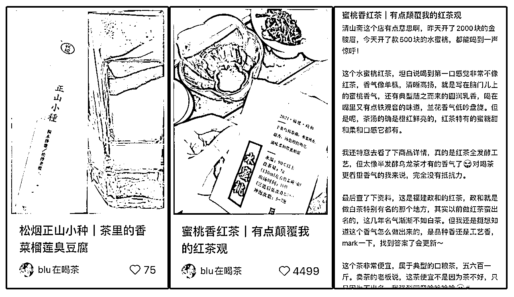
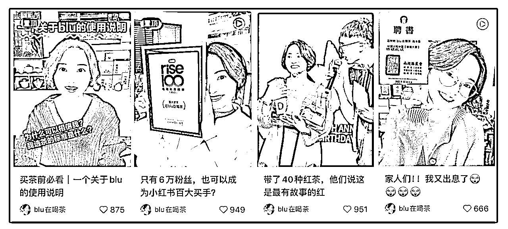

来源：https://m08zlw24sg0.feishu.cn/docx/MdcpdYlpro0TodxpKHWcSpI9nIc
我之前从账号整体的角度，拆解过2次登上小红书买手榜的茶叶买手博主@blu在喝茶
这次，我们从内容选题的角度再来拆解一下，她的选题很值得想要打造买手IP的伙伴学习。
她的选题方向大概可以分7种：单品种草/测评、选购攻略、合集清单、观点分享、单店种草、方法及科普、开箱记录。
也有关于自己IP故事的，不多但有力，主要是在关键节点，比如获得小红书百大买手、台湾茶协会颁发证书……这种关键时候发。
这样的内容组合下来，这个买手IP能有很高的商业价值：既有种草带货的能力，又有足够的IP属性、信任度可以长期带货，而且可以低粉带货，不需要太过卷流量、卷噱头。
每个选题方向怎么做？我们一个一个来分析：
蜜桃香红茶|有点颠覆我的红茶观
松烟正山小种|茶里的香菜榴莲臭豆腐

单品种草，容易被人认为是在打广告，所以内容要尽量细节、有个人风格，像是在跟朋友聊天，说某个东西如何如何。也不能夸奖得太过分，要实事求是。
图片也尽量真实、生活化，不要有太重的营销感。
单品测评标题公式：
店铺+产品名|一句话点评
猜你要买龙井了！吐血整理的选购指南，给！
保姆级教学|手把手教你买到靠谱西湖龙井
选购攻略，内容最好是对新手的，同时是大家需求比较大的，比如某个季节买龙井的需求比较高，就做龙井选购攻略，年节期间普洱的需求比较大，就可以做普洱的选购攻略。
另外，把相关的IP身份标签体现出来，也能增加攻略的可信度。
攻略公式：
吐血整理/手把手教你/保姆级教学+某个细分品类的选购指南
平价茶具合集|好看，实用！
茶具合集|6种，最低才9块
栀子花茶合集|5种，香得掸都掸不开
清单最好有特点，这样才能吸引人看，这个特点，要么平价、要么实用、要么很全，要么具有特色，比如栀子花茶合集。当然，不同的品类，会有不同的特点，需要根据情况来选择。
清单公式：
平价/特色+某个细分品类合集+合集特点
谁要是再跟你说喝茶烧钱……（算笔账看看喝茶多费钱）
观点类的，如果说中了粉丝心声，效果可能比干货更好。
所以最好能是粉丝的嘴替、或者是讲某些反常的观点，比如许多爱好都会被不了解的人说“烧钱”，这个观点既是嘴替，又很反常，所以数据很好。
白茶好店|感觉老板把家底都抠出来了……
白茶好店|以及分享一些找店思路
单店种草，也很容易被认为是打广告，所以要避免“营销感”，内容风格最好像是跟闺蜜朋友分享，不要只讲好的，如果有细微槽点也可以直说，这样才更真实。
盖碗使用技巧|用这个方法泡茶真的会上头
新手常见Q&A|喝茶真不麻烦！有嘴就行！！
袋泡茶为什么没散茶好喝？是质量不好吗？
讲方法时，突出这个方法的好处，比如“会上头”，说明效果很好、比如“有嘴就行”，说明非常简单；讲科普时，挑大家都有印象的点，比如喝茶人都觉得“袋泡茶没有散茶好喝”，并提出疑问。
标题公式：
某类器物使用技巧 + 好处
新手常见Q&A + 观点
某事 + 为什么是这样 ？ 是因为+某原因吗？
茶叶开箱合集|8家，拆快递好快乐！
开箱类内容，适合做多家开箱合辑，或者是某个网红店的开箱，这样的吸引力会更强。
标题公式：
某物 +开箱记录 | 开箱感受
家人们！！我又出息了
带了40种红茶，他们说这是最有故事的红
只有6万粉丝，也可以成为小红书百大买手？
买茶前必看|一个关于blu的使用说明

IP故事不在多，而在力度。
获得有份量的荣誉时、取得重要的成绩时，可以作为喜事分享、经验分享，以跟朋友分享的方式发出来，这样既不会有咄咄逼人的优越感，还能让大家更加信任你、认可你。
自媒体的逻辑是相通的，只要是做买手IP，这些选题方向，不仅小红书可以用，抖音、公众号、视频号也适用，只是在做具体内容时，注意一下各个平台的内容风格就可以。
（以上内容，大多是22年上半年发布，23年中重新编辑，此时，是小红书开始大力发展直播买手的时候。这个时间线也是可以分析一下的。
一个账号，如果认真分析，真的有太多太多细节可以说明各种问题，挺有意思~）